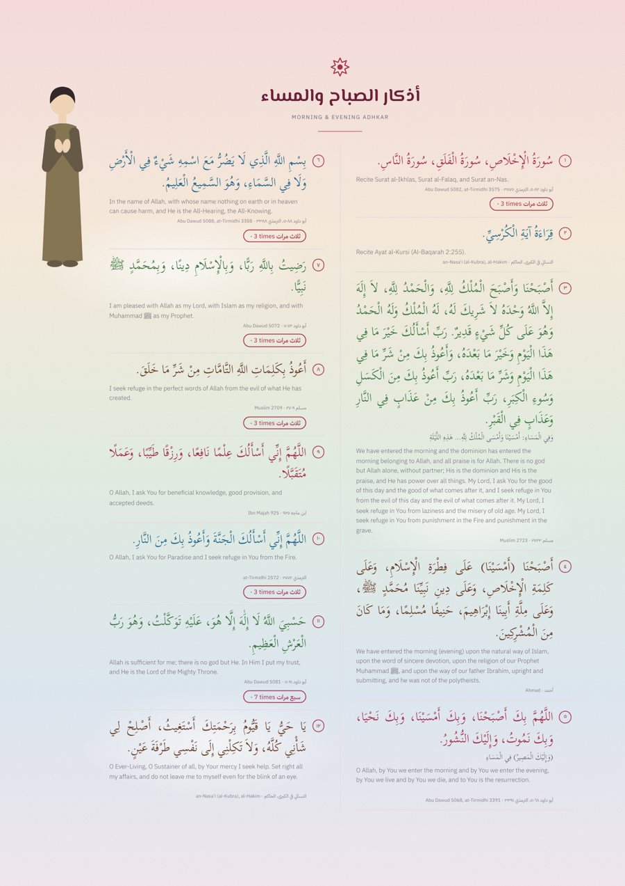
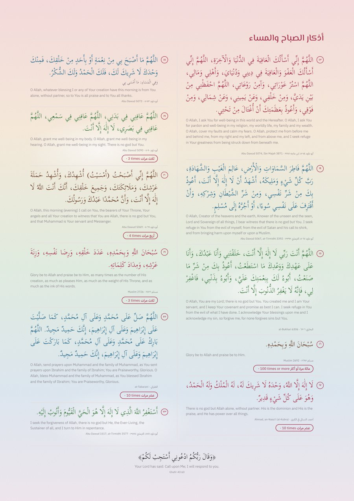

وَلَوْ لَمْ يَكُنْ فِي الذِّكْرِ إِلَّا هَذِهِ وَحْدَهَا لَكَفَى بِهَا فَضْلًا وَشَرَفًا“If there were no other virtue in dhikr except this alone, it would be enough as a virtue and an honour.”
Ibn al-Qayyim, al-Wābil aṣ-Ṣayyib
The adhkar of the morning and evening from the Quran and Sunnah, each with its reference, on a card you print and keep where you will see it.




23 adhkar · A4 · 2 pages · with sourcesA card on the wall, a habit in the heart
Choose your card
Take the ready card, or open the maker to pick which adhkar to include, their order, colours and size.
Print it or keep it on your phone
Save as PDF or image. Put it where you pray, by the bed, or on the fridge for the family.
Read it at its time
Morning after Fajr, evening after ʿAsr. The card stays the same, so the words soon become yours.
Commanded by Allah, kept by His Messenger ﷺ
“O you who have believed, remember Allah with much remembrance, and exalt Him morning and afternoon.”
Al-Aḥzāb 33:41–42“And exalt [Allah] with praise of your Lord before the rising of the sun and before its setting.”
Qāf 50:39“The most beloved of deeds to Allah are those done consistently, even if they are few.”
al-Bukhārī 6464, Muslim 783- Tie it to a prayer you already praySit after Fajr and after ʿAsr before you reach for your phone.
- Start with what you can keepMake a short card with a few adhkar, then add more once it holds. The maker lets you switch any off.
- Keep it in sightA printed card where you pray is a reminder that needs no notification.
- Read togetherReading aloud with the family helps everyone learn the words.
Morning: after Fajr, before sunrise.
Evening: after ʿAsr, before sunset.
Let the little ones grow up with these words
Add a child figure making duʿāʾ, choose soft colours and bigger text, and put the card in their room. Children learn by hearing, so read it with them.
“O you who have believed, protect yourselves and your families from a Fire.”
At-Taḥrīm 66:6References
Following the way of scholars such as Ibn Kathīr, we give the reference for each text so you can look it up and check it yourself. Where we cite a grading, we name the scholar who gave it. If you find a mistake, please tell us.
- Al-Baqarah 2:152 · Al-Aḥzāb 33:41–42 · Qāf 50:39 · Ar-Raʿd 13:28 · At-Taḥrīm 66:6
- Ṣaḥīḥ al-Bukhārī 6306, 6384, 6407, 6464, 6682, 7405
- Ṣaḥīḥ Muslim 783, 2137, 2675, 2692, 2694, 2704, 2709, 2723, 2726
- Sunan Abī Dāwūd 1517, 5067–5090
- Jāmiʿ at-Tirmidhī 2572, 3377, 3388, 3391, 3392, 3462, 3575, 3577
- Sunan Ibn Mājah 925, 3790, 3871 · Musnad Aḥmad · an-Nasāʾī (al-Kubrā) · al-Ḥākim · aṭ-Ṭabarānī
- Muwaṭṭaʾ Mālik · Ibn Rajab, Kalimat al-Ikhlāṣ · Ibn al-Qayyim, al-Wābil aṣ-Ṣayyib min al-Kalim aṭ-Ṭayyib
- Translations of the meanings: Quran from Saheeh International; hadith and the words of the Salaf in English.
Start tomorrow morning
Print the card tonight, keep it where you pray, and read it after Fajr.